Barbarian
- HP
- 60
- Toughness
- 3
- Wisdom
- 4
- Energy
- +5 / 8
- Agility
- +4 / 5
- Weapon
- Great Axe
Ability (attack action). Deal 4 damage to an adjacent enemy. It moves 1 tile and discards a card, and the Barbarian steps into the tile it left.
A turn-based tactics game where your hand is your move set. Each character brings its own ability to a hex battlefield.
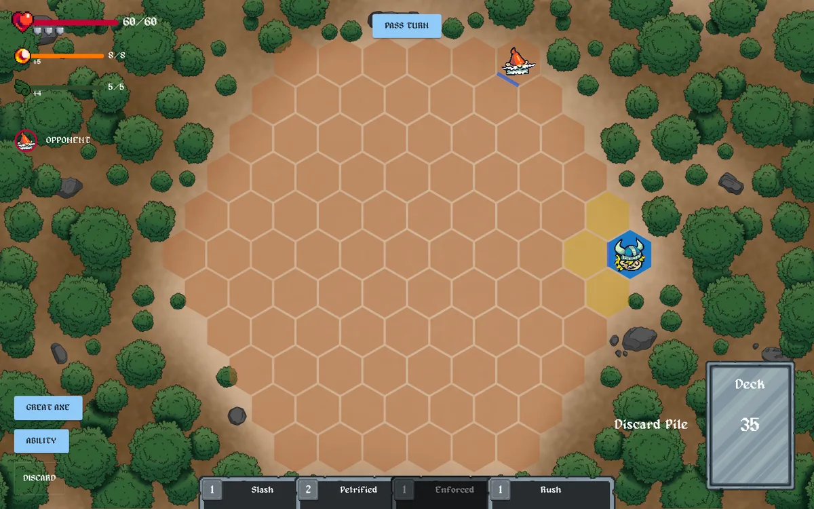
Glory mixes a tactics game with a card game. Attacks, defence and movement are driven by cards, weapons and each character's ability, so a character's deck is a big part of how it plays. Every character has five stats that shape how they play:
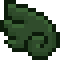
Agility, two resources you gain each turn, each with its own cap. Some characters also use Mana.Decks are up to 40 cards, with at most 3 copies of a card, and only cards that match the character's talent.
I sketched the game screen before it was built: the hex board in the middle, the character and stats in the bottom-left corner, the hand along the bottom, and the deck and discard pile on the right.
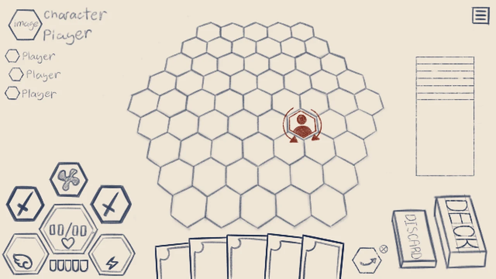
An attack opens a combat chain. The defender and the attacker take turns adding reactions until both pass. Then the chain resolves from the last card to the first, like the stack in Magic or the combat chain in Flesh and Blood. Where an attack lands also depends on Facing. Both players make decisions during every attack.
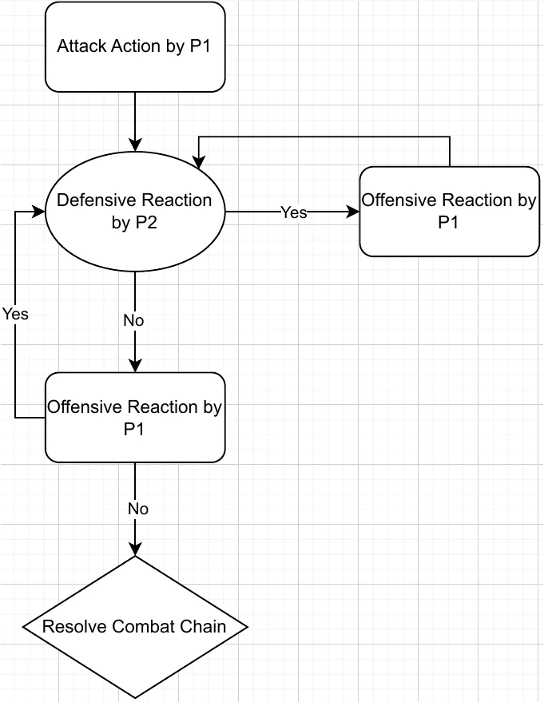
Characters face a direction, and attacks land on the front, side or back. The direction comes from the shortest path between attacker and target. When there's more than one shortest path, the attacker picks one at the end of the chain. That makes positioning part of the card game:
Ability (attack action). Deal 4 damage to an adjacent enemy. It moves 1 tile and discards a card, and the Barbarian steps into the tile it left.
Block 2: when this combat chain resolves, prevent 2 damage. If you were attacked from the front, block 2 more.
Cards like Back Swing (+2 damage from behind) and Aegis (+2 block from the front) pull in opposite directions, so turning to face an enemy is a real decision. Some defensive cards, like Awareness, let you turn during the chain.
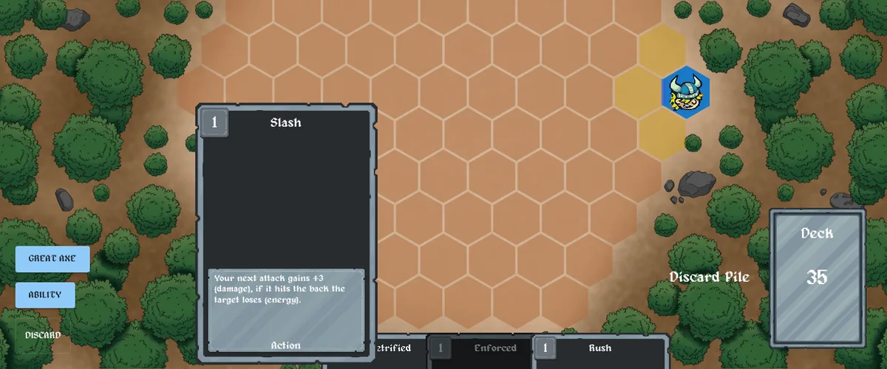
I designed ten characters: Assassin, Barbarian, Bard, Cleric, Ice Wizard, Marksman, Necromancer, Rogue, Soul Stealer and Wizard. Each has its own ability. A few examples:
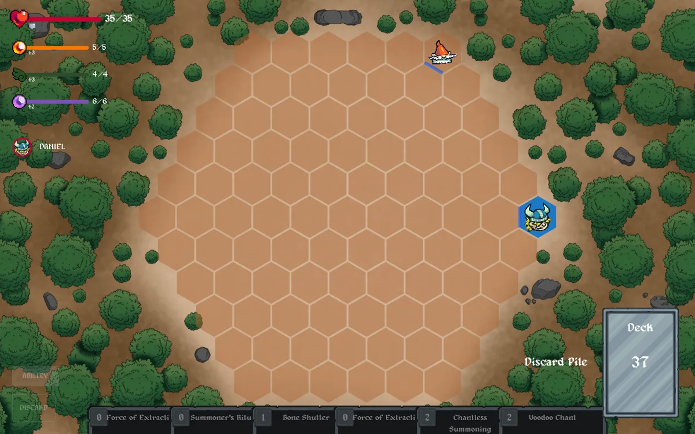
Across them there are 75 cards and 10 weapons, defined in the game's code and exported to spreadsheets.
I drew the cards, the stat icons, the maps and the title.
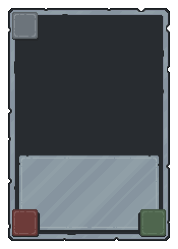
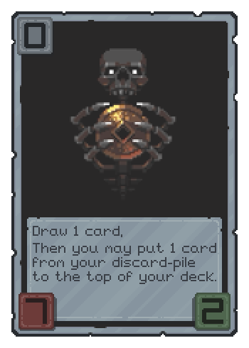
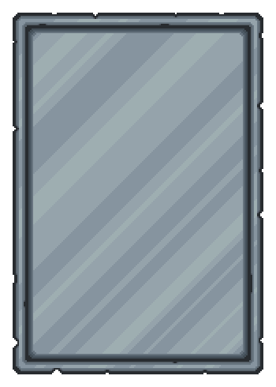
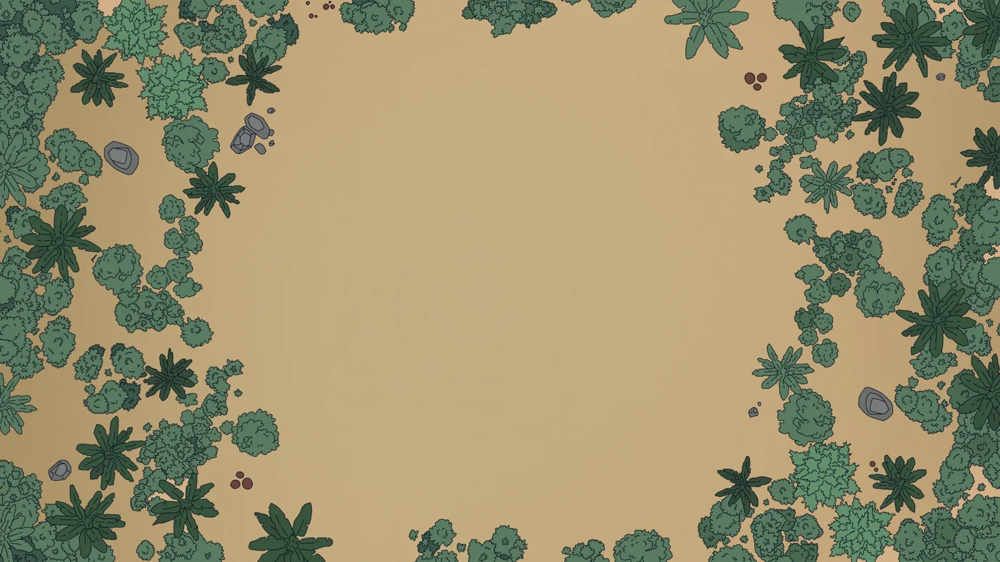
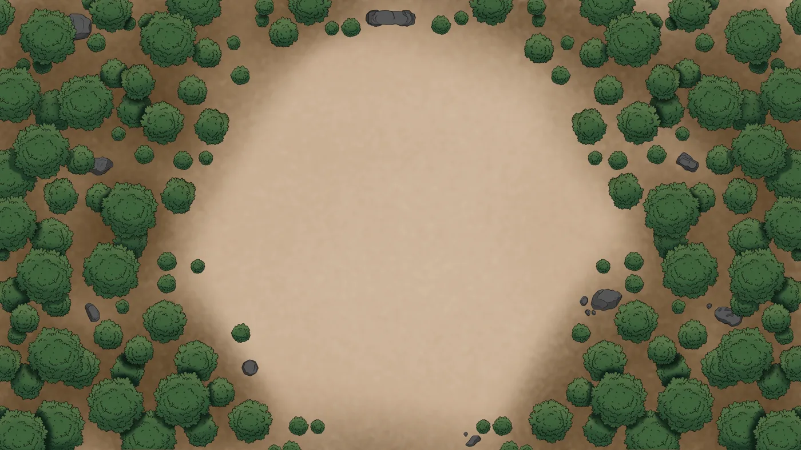
The playable multiplayer build offers the Barbarian and the Necromancer, as in the screenshots. The other eight characters are in the code but not enabled, and some of them aren't finished. The last update to the project was in February 2025.